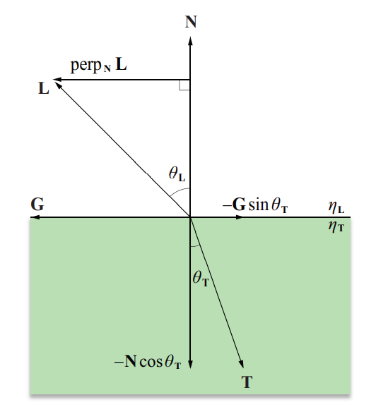

反射与折射向量
在计算过程中需要注意方向，L 的方向是从反射/折射点指向光源，并且 N 和 L 均为单位长度向量。
反射向量计算

一束光线照射在一个反射面上，其反射光线的方向遵循一个简单的规律，即入射角等于反射角。
vec3 reflect(vec3 l, vec3 n) {
return 2.0f*dot(n,l)*n - l;
}
折射向量计算
透射表面具有折射系数属性，根据 Snell 定律，入射角和折射角之间的关系如下式所示。

T的表达式如下。
// Snell's law
vec3 refract(const vec3 &I, const vec3 &N, const float eta_t, const float eta_i=1.f) {
float cosi = - std::max(-1.f, std::min(1.f, dot(I,N)));
// if the ray comes from the inside the object, swap the air and the media
if (cosi<0) return refract(I, -N, eta_i, eta_t);
float eta = eta_i / eta_t;
float k = 1 - eta*eta*(1 - cosi*cosi);
// k<0 = total reflection, no ray to refract.
// I refract it anyways, this has no physical meaning
return k<0 ? vec3(1,0,0) : I*eta + N*(eta*cosi - sqrtf(k));
}